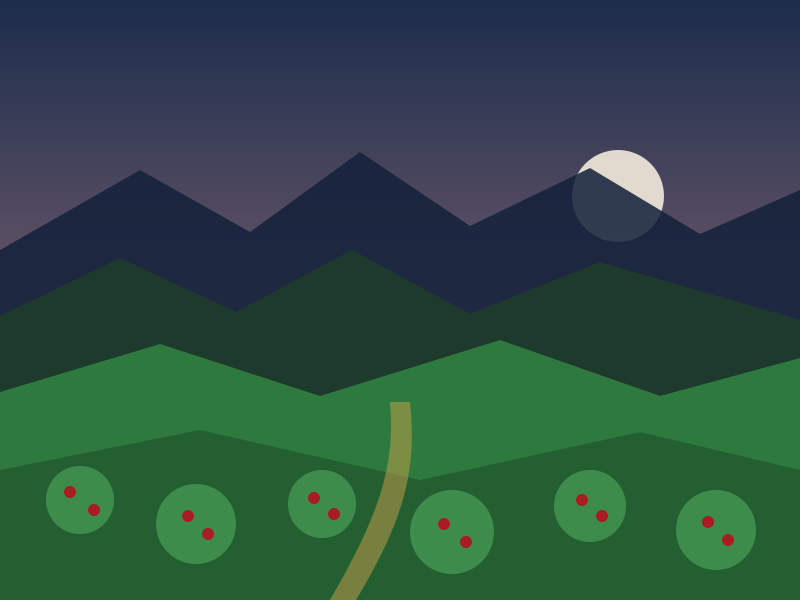
Café de finca propia
Sembrado y cosechado por nosotros en la montaña sobre Coronado. Sin intermediarios entre la mata y la taza.
San Isidro de Coronado · Costa Rica
Sembramos el café en la montaña de Coronado, lo tostamos aquí mismo en la casa y se lo servimos en la pieza de barro que inventamos nosotros. Veintitrés años haciendo lo mismo, cada vez mejor.
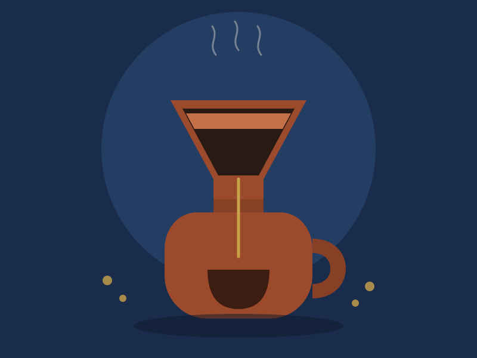
La casa
Kaffa abrió en 2003. Un año después dejamos todo lo demás y nos quedamos solo con café de origen: el que sembramos nosotros en la montaña, sobre Coronado. Se cosecha, se seca, se tuesta en el local y se sirve a pocos metros del tostador.
En esa misma casa Minor Alfaro creó la Vandola, un método de infusión en barro que hoy se exporta a Alemania, China y Estados Unidos, y que tiene su propio campeonato nacional.
Servicios
Todo sale de la misma finca y del mismo tostador. Lo que cambia es cómo se lo llevás: en la mesa, en la taza, en grano para la casa o aprendiendo a colarlo.

Sembrado y cosechado por nosotros en la montaña sobre Coronado. Sin intermediarios entre la mata y la taza.
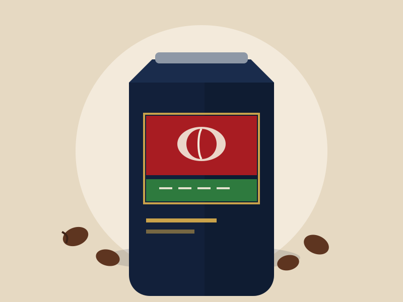
El tostador está en el mismo local. El café que se sirve en la mesa se tostó a pocos metros, esa misma semana.
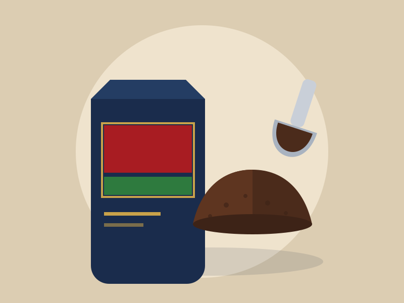
Se muele al momento y según el método: chorreador, prensa, espresso o Vandola. Se lleva en grano si prefiere.
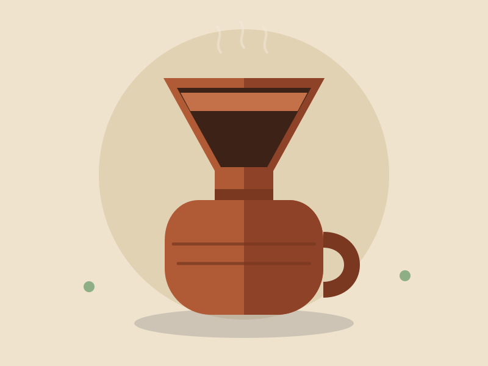
La pieza que creó Minor Alfaro, en cerámica hecha a mano por alfareros de tradición precolombina.
Se cuela en la barra, enfrente suyo, para que vea el método completo antes de tomárselo.
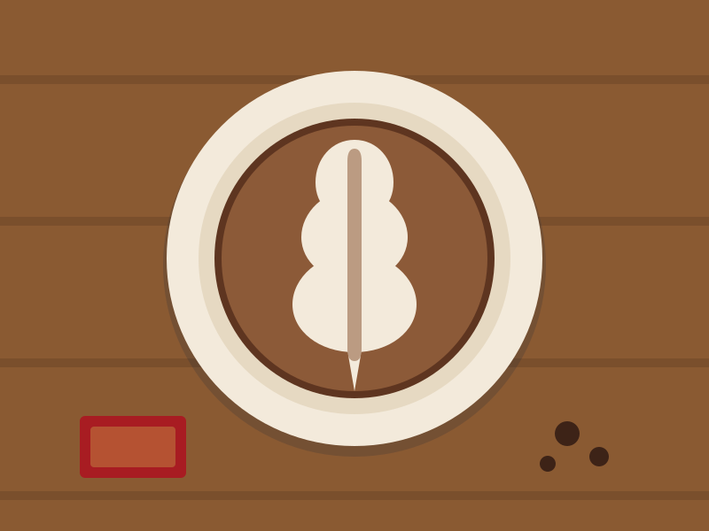
Desayuno típico y opciones de la casa, desde que abrimos a las 8:00 a. m.
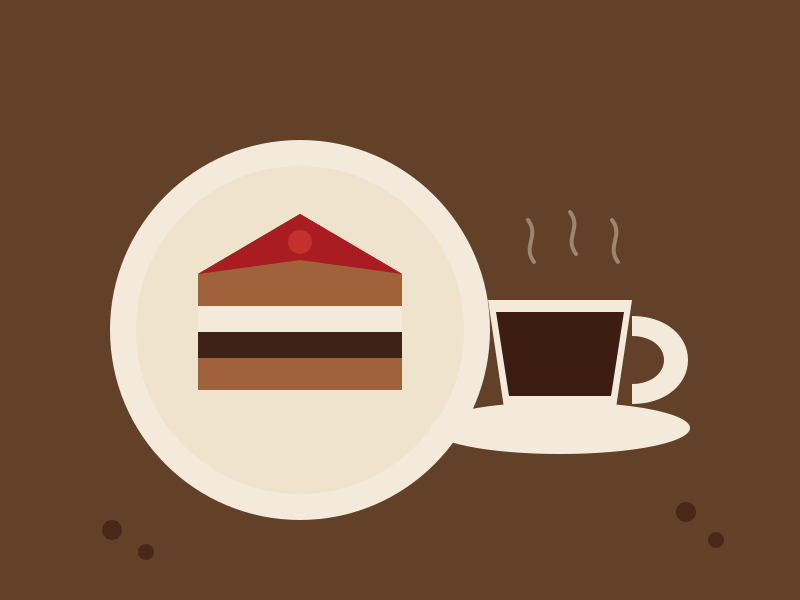
Pan dulce y postres hechos aquí, pensados para acompañar el café y no para taparlo.
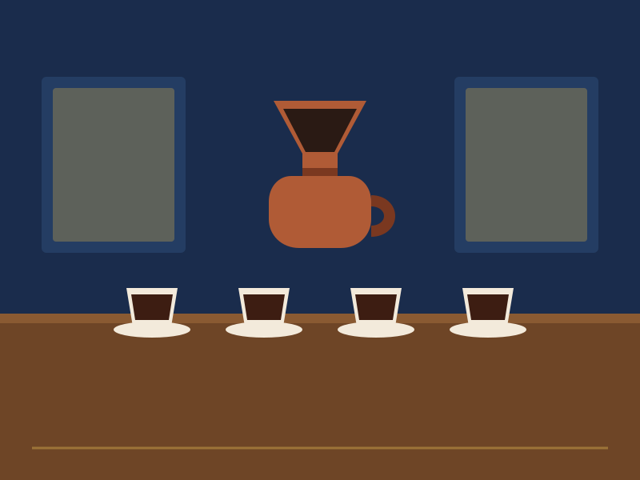
Sesión para aprender a reconocer cuerpo, acidez y aroma. Para grupos, con reserva.
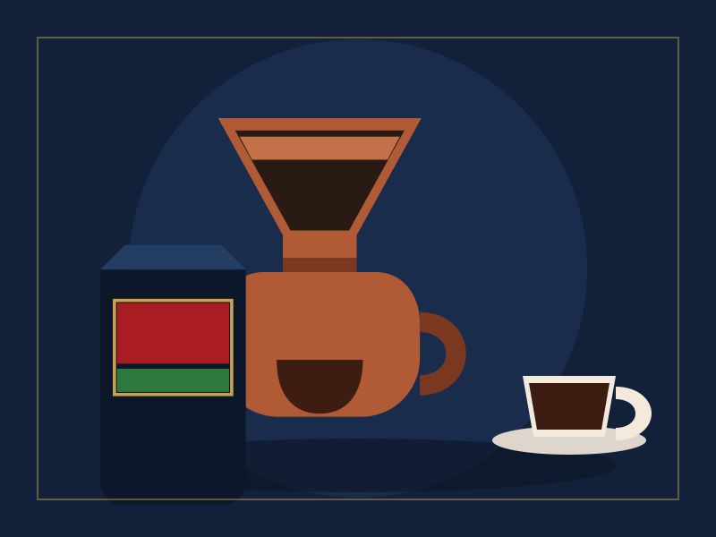
La pieza, la base y el café, listos para llevar. Es el regalo que más sale para afuera del país.
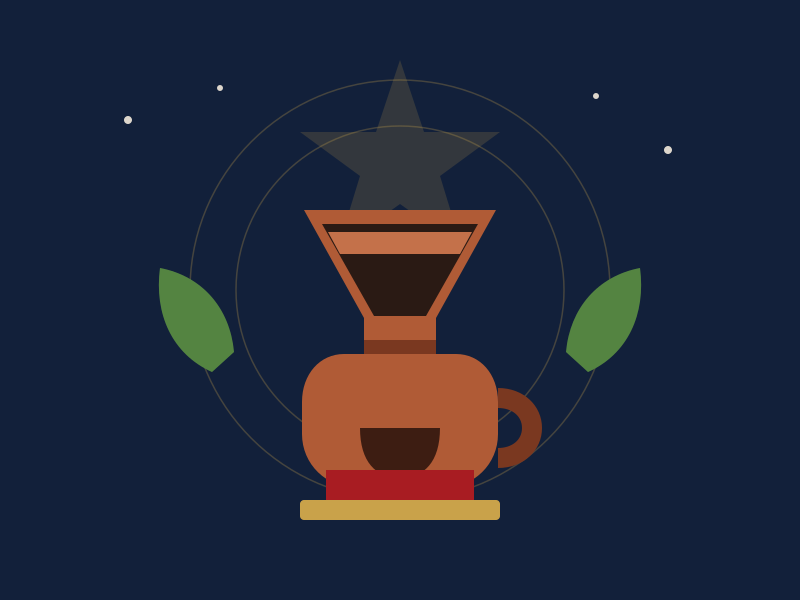
Sede del campeonato nacional de Vandola. También se presta la casa para eventos privados.
Galería
Arrastre el control para ver el antes y el después de cada etapa.
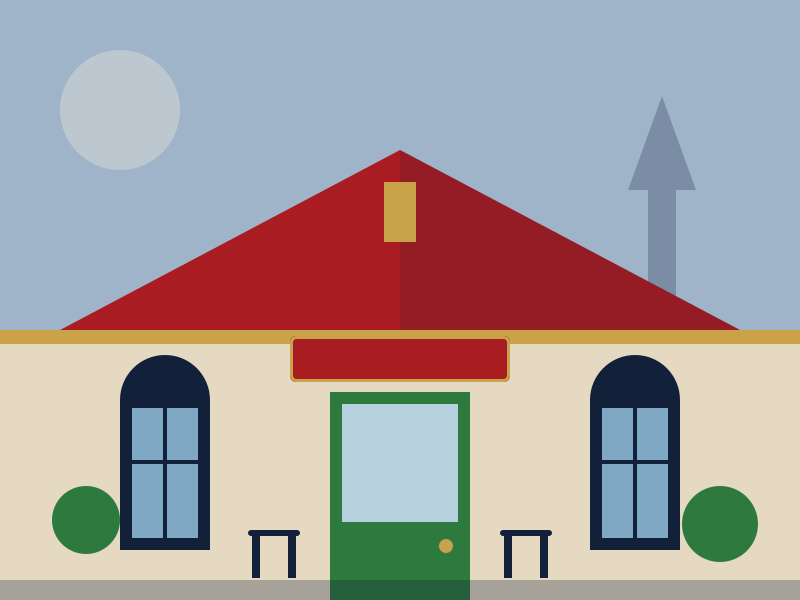
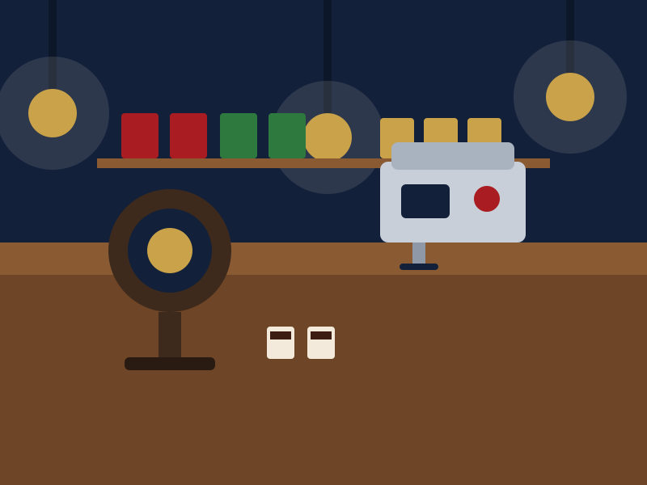
12 de 25 espacios usados. El plan Profesional admite hasta 25 fotos.
Testimonios
Sección lista para activar: los tres textos de abajo son de relleno, no son reseñas reales. Se reemplazan cuando Don Minor pase los testimonios que quiera publicar.
Aquí va el testimonio de un cliente real, en sus propias palabras. Dos o tres líneas funcionan mejor que un párrafo largo.Nombre del clienteCoronado
Un segundo testimonio, ojalá de alguien que haya hecho el taller o la cata, para que hable de esa experiencia y no solo del café.Nombre del clienteSan José
Un tercero, de preferencia de alguien de afuera del país que se haya llevado una Vandola. Sirve para respaldar la exportación.Nombre del clienteAlemania
Reservas
Para mesa no siempre hace falta reservar, pero para catas, talleres y grupos sí. Llene el formulario y le confirmamos disponibilidad y precio.
Le respondemos por correo o WhatsApp con la disponibilidad y el monto.